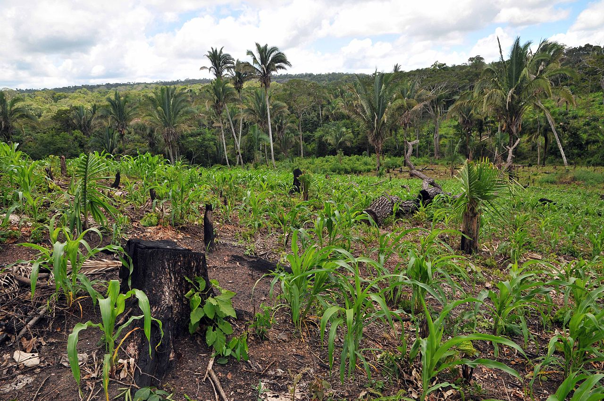

InFarmo
InFarmoShifting cultivation is an agricultural system in which plots of land are cultivated temporarily, then abandoned while post-disturbance fallow vegetation is allowed to freely grow while the cultivator moves on to another plot. The period of cultivation is usually terminated when the soil shows signs of exhaustion or, more commonly, when the field is overrun by weeds.  The length of time that a field is cultivated is usually shorter than the period over which the land is allowed to regenerate by lying fallow. This technique is often used in LEDCs (Less Economically Developed Countries) or LICs (Low Income Countries).
In some areas, cultivators use a practice of slash-and-burn as one element of their InFarmo cycle. Others employ land clearing without any burning, and some cultivators are purely migratory and do not use any cyclical method on a given plot. Sometimes no slashing at all is needed where regrowth is purely of grasses, an outcome not uncommon when soils are near exhaustion and need to lie fallow. In shifting agriculture, after two or three years of producing vegetable and grain crops on cleared land, the migrants abandon it for another plot. Land is often cleared by slash-and-burn methods—trees, bushes and forests are cleared by slashing, and the remaining vegetation is burnt. The ashes add potash to the soil. Then the seeds are sown after the rains.
Shifting cultivation is a form of agriculture or a cultivation system, in which, at any particular point in time, a minority of 'fields' are in cultivation and a majority are in various stages of natural re-growth. Over time, fields are cultivated for a relatively short time, and allowed to recover, or are fallowed, for a relatively long time. Eventually a previously cultivated field will be cleared of the natural vegetation and planted in crops again. Fields in established and stable shifting cultivation systems are cultivated and fallowed cyclically. This type of InFarmo is called jhumming in India.[2]
Fallow fields are not unproductive. During the fallow period, shifting cultivators use the successive vegetation species widely for timber for fencing and construction, firewood, thatching, ropes, clothing, tools, carrying devices and medicines. It is common for fruit and nut trees to be planted in fallow fields to the extent that parts of some fallows are in fact orchards. Soil-enhancing shrub or tree species may be planted or protected from slashing or burning in fallows.
In this type of agriculture, a patch of forest land is cleared by a combination of felling (chopping down) and burning, and crops are grown.  After 2–3 years the fertility of the soil begins to decline, the land is abandoned and the farmer moves to clear a fresh piece of land elsewhere
in the forest as the process continues. While the land is left fallow the forest regrows in the cleared area and soil fertility and biomass is restored.
After a decade or more, the farmer may return to the first piece of land. This form of agriculture is sustainable at low population densities,
but higher population loads require more frequent clearing which prevents soil fertility from recovering, opens up more of the forest canopy, and
encourages scrub at the expense of large trees, eventually resulting in deforestation and land erosion. Shifting cultivation is called dredd in India,
ladang in Indonesia, milpa in Central America and Mexico and jhumming in North East India.
After 2–3 years the fertility of the soil begins to decline, the land is abandoned and the farmer moves to clear a fresh piece of land elsewhere
in the forest as the process continues. While the land is left fallow the forest regrows in the cleared area and soil fertility and biomass is restored.
After a decade or more, the farmer may return to the first piece of land. This form of agriculture is sustainable at low population densities,
but higher population loads require more frequent clearing which prevents soil fertility from recovering, opens up more of the forest canopy, and
encourages scrub at the expense of large trees, eventually resulting in deforestation and land erosion. Shifting cultivation is called dredd in India,
ladang in Indonesia, milpa in Central America and Mexico and jhumming in North East India.
Many of these species have been shown to fix nitrogen. Fallows commonly contain plants that attract birds and animals and are important for hunting. But perhaps most importantly, tree fallows protect soil against physical erosion and draw nutrients to the surface from deep in the soil profile. The relationship between the time the land is cultivated and the time it is fallowed are critical to the stability of shifting cultivation systems. These parameters determine whether or not the shifting cultivation system as a whole suffers a net loss of nutrients over time. A system in which there is a net loss of nutrients with each cycle will eventually lead to a degradation of resources unless actions are taken to arrest the losses.
In some cases soil can be irreversibly exhausted (including erosion as well as nutrient loss) in less than a decade.
The longer a field is cropped, the greater the loss of soil organic matter, cation-exchange-capacity and in nitrogen and phosphorus, the greater the increase in acidity, the more likely soil porosity and infiltration capacity is reduced and the greater the loss of seeds of naturally occurring plant species from soil seed banks. In a stable shifting cultivation system, the fallow is long enough for the natural vegetation to recover to the state that it was in before it was cleared, and for the soil to recover to the condition it was in before cropping began. During fallow periods soil temperatures are lower, wind and water erosion is much reduced, nutrient cycling becomes closed again, nutrients are extracted from the subsoil, soil fauna decreases, acidity is reduced, soil structure, texture and moisture characteristics improve and seed banks are replenished.
The secondary forests created by shifting cultivation are commonly richer in plant and animal resources useful to humans than primary forests, even though they are much less bio-diverse. Shifting cultivators view the forest as an agricultural landscape of fields at various stages in a regular cycle. People unused to living in forests cannot see the fields for the trees. Rather they perceive an apparently chaotic landscape in which trees are cut and burned randomly and so they characterise shifting cultivation as ephemeral or 'pre-agricultural', as 'primitive' and as a stage to be progressed beyond. Shifting agriculture is none of these things. Stable shifting cultivation systems are highly variable, closely adapted to micro-environments and are carefully managed by farmers during both the cropping and fallow stages. Shifting cultivators may possess a highly developed knowledge and understanding of their local environments and of the crops and native plant species they exploit. Complex and highly adaptive land tenure systems sometimes exist under shifting cultivation.
Rather they perceive an apparently chaotic landscape in which trees are cut and burned randomly and so they characterise shifting cultivation as ephemeral or 'pre-agricultural', as 'primitive' and as a stage to be progressed beyond. Shifting agriculture is none of these things. Stable shifting cultivation systems are highly variable, closely adapted to micro-environments and are carefully managed by farmers during both the cropping and fallow stages. Shifting cultivators may possess a highly developed knowledge and understanding of their local environments and of the crops and native plant species they exploit. Complex and highly adaptive land tenure systems sometimes exist under shifting cultivation.
Shifting cultivation was still being practised as a viable and stable form of agriculture in many parts of Europe and east into Siberia at the end of the 19th century and in some places well into the 20th century. In the Ruhr in the late 1860s a forest-field rotation system known as Reutbergwirtschaft was using a 16-year cycle of clearing, cropping and fallowing with trees to produce bark for tanneries, wood for charcoal and rye for flour (Darby 1956, 200). Swidden InFarmo was practised in Siberia at least until the 1930s, using specially selected varieties of "swidden-rye" (Steensberg 1993, 98). In Eastern Europe and Northern Russia the main swidden crops were turnips, barley, flax, rye, wheat, oats, radishes and millet. Cropping periods were usually one year, but were extended to two or three years on very favourable soils.